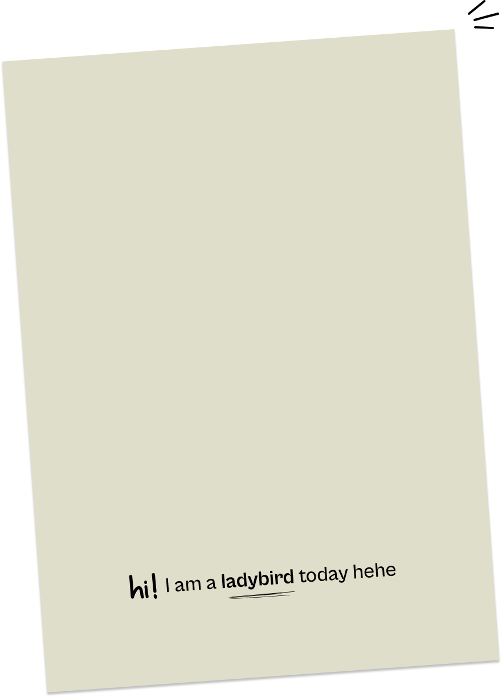
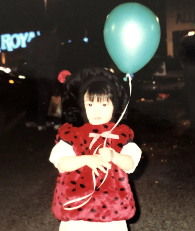

Angela: My parents immigrated from China to the United States in hopes of creating more opportunities for their children. I was born and raised in the States but I moved to China for two years for education and personal reasons when I was around 9.